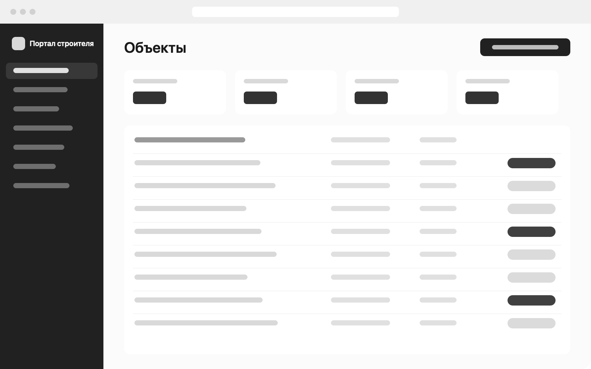
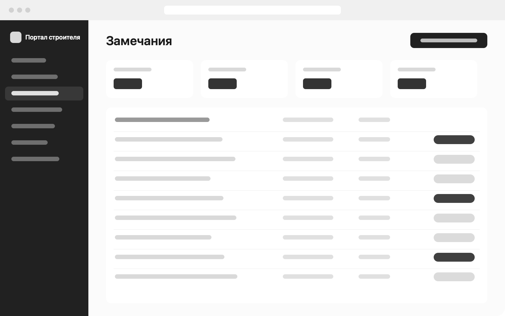
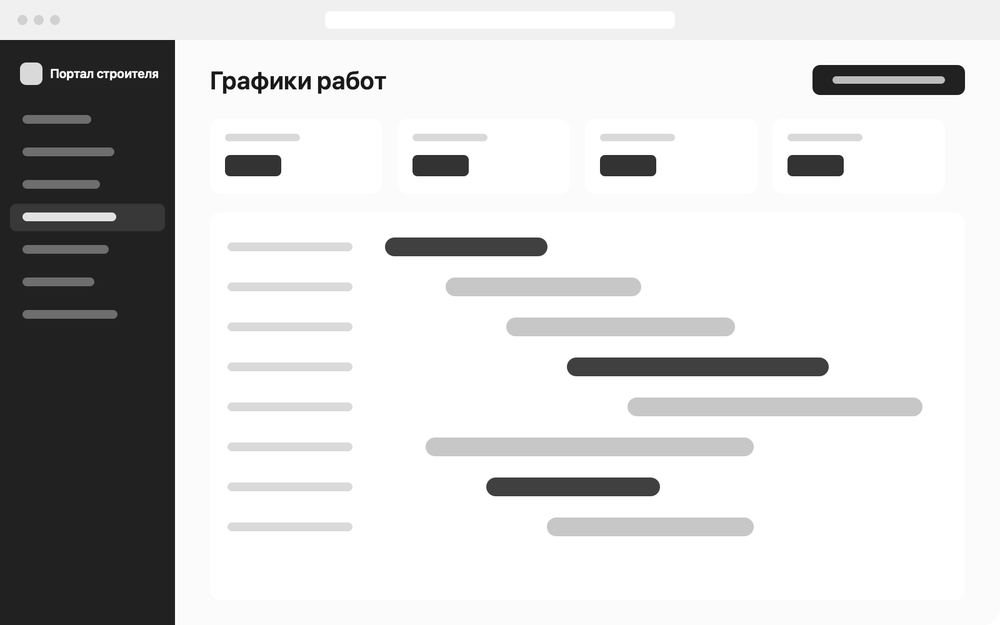

Портал строителя
Веб-портал Sminex, через который подрядчики работают с девелопером. Я разработал концепцию продукта, а дальше вёл его дизайн как арт-директор — вместе с командой из одного-двух дизайнеров.

Стройка премиального дома — это десятки подрядчиков
Sminex строит премиальные жилые и офисные дома в Москве и последовательно цифровизирует стройку. Подрядчикам нужно одно рабочее место для взаимодействия с девелопером.
До портала: как подрядчики работали со Sminex — почта, Excel, бумага, другая система. Главная боль: что мешало сильнее всего.
Концепция и арт-дирекшн
Доступ на стройку — без переписки
Чтобы сотрудник подрядчика попал на площадку, нужна заявка на доступ. Раньше замечания к ней уходили в почту, а исправленную заявку подавали заново. Вместе с командой мы перенесли согласование внутрь документа: в нём есть история согласования, а поля, которые нужно исправить, подсвечены. Ошибки ловят валидации ещё при заполнении, доступ можно оформить сразу на нескольких сотрудников, а причина отказа видна в карточке.
Отклонённый акт можно перезапустить
Почти каждый второй акт выполненных работ уходил на доработку. Подрядчик не всегда понимал причину, а отклонённый документ приходилось создавать заново. Теперь причина отклонения приходит из учётной системы и видна прямо на портале. Акт можно вернуть в черновик и снова отправить на согласование, а история при этом сохраняется.

Обращения вместо поручений
По запросу бизнеса «Поручения» стали «Обращениями» — этим словом в компании называют такие запросы. Заодно мы разобрали путаницу: в одном поле комментария смешивались внутренние пометки Sminex и вопросы к подрядчику. Вопрос подрядчику отделили от внутренней пометки, и у каждого появились свои статусы: теперь видно, на что подрядчик ответил, а что зависло.

Экраны
Ключевые разделы портала.
Портал растёт вместе со стройкой
Чем дизайн для стройки отличается от B2C: ваш вывод — например, в сравнении с Sminex Comfort.